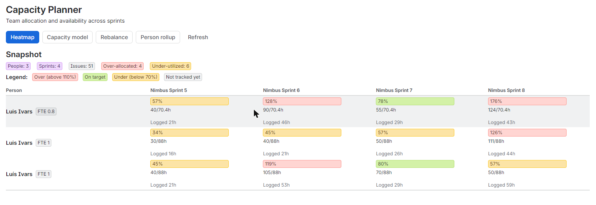
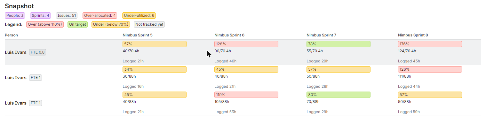
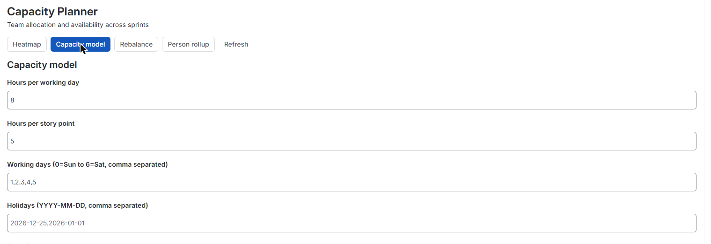
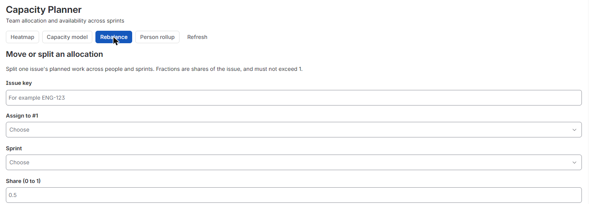
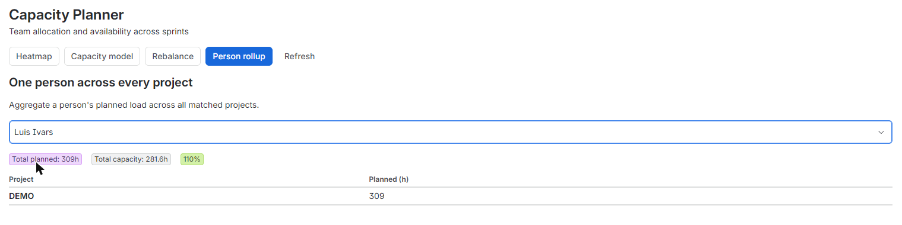

Capacity Planner for Jira turns assignees, estimates, sprint dates, and worklogs you already have into a single capacity heatmap: who's over-allocated, who has room, and where to rebalance, without buying or configuring a second app.





The core of the app is the Team Capacity Heatmap, a dashboard gadget that renders per-person allocation versus availability across sprints or weeks as a color-coded (RAG) chart. Add it to any Jira dashboard to see, at a glance, who's over-allocated, who's under-allocated, and where the next sprint is at risk. When you spot a problem, rebalance it from the same view: form controls let you move or split an issue's allocation across people and periods, and every override is saved automatically (Forge KVS, storage:app, per gadget) so your plan persists between sessions. Configure the capacity model to match how your team actually works: set a working calendar, holidays, and a part-time or FTE factor per user, all computed inside Atlassian. For teams spread across many projects, the heatmap rolls up one person's load across every project and board they're on, covering the common case of a contractor or lead billable across 40 or more projects. Because every calculation and every saved plan stays inside Forge (KVS and @forge/api), with no external egress, Capacity Planner for Jira is eligible for Runs on Atlassian: your capacity data stays on Atlassian infrastructure.
The heatmap shows who's over or under-allocated across sprints and projects in one view, so you catch capacity problems before they become missed deadlines or burnout.
Split or move an issue's allocation across people and periods with form controls, saving the override instantly so replanning takes minutes, not a spreadsheet rebuild.
Every figure comes from native Jira data (assignees, estimates, sprint dates, worklogs), so you get real allocation vs availability numbers without buying or configuring another time-tracking app.
Does this require a separate time-tracking app or any other paid app?
No. All allocation and availability numbers are calculated from native Jira data (assignees, estimates, sprint dates, worklogs). There's no second license to buy or configure.
Where does my data live?
Inside Forge: computation and storage use Forge's KVS and @forge/api only, with no external servers or egress. The app is Runs on Atlassian eligible.
Can I see one person's workload across multiple projects?
Yes. The heatmap rolls up a person's allocation across every project and board they're assigned to, so you see their total load in one chart instead of checking each project separately.
Can I adjust for part-time staff or holidays?
Yes. Set each user's FTE factor, working calendar, and holidays in the capacity model settings so availability reflects real working time.
What does pricing look like?
Free at launch.
The app reads Jira data with the permissions of the person using it, and only:
Everything runs on Atlassian Forge and no data leaves Atlassian. Details in the privacy policy.
For questions, issues, or feature requests: